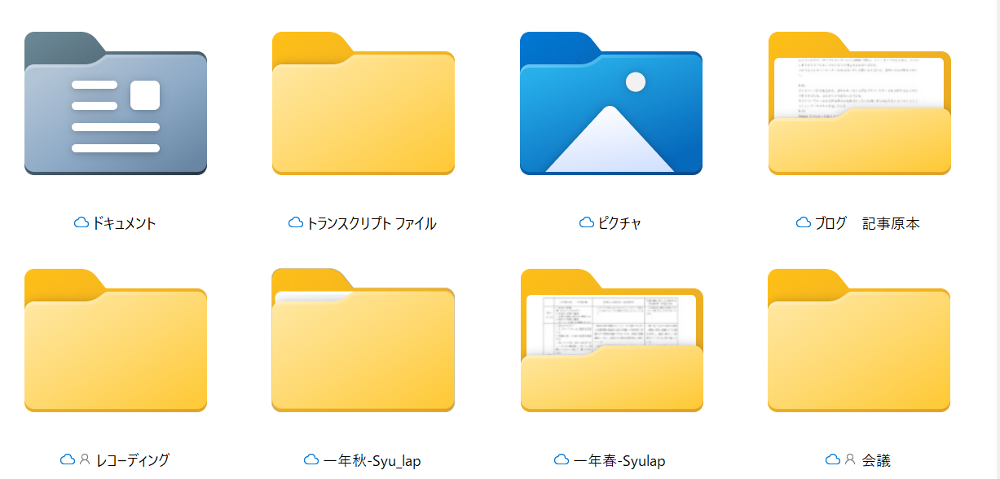

OneDriveに授業用フォルダーを作って、ファイルを保存する
なぜOneDriveを使うのか
一番の理由は、PCが壊れたときに、授業の資料やレポートまでなくすのを防ぐためです。提出前にPCが壊れてレポートを書き直すのはさすがにきついので、私は最初からOneDriveに保存しておくのをおすすめします。アップロードが済んでいれば、別のPCからでも開けます。
あと、PCを持っていなくても、スマホやiPadからファイルを開けます。 同じ大学アカウントでOneDriveにログインすれば、移動中に配布資料を確認したり、対応するWordなどのアプリでレポートの続きを書いたりできます。
学芸大では大学のアカウントでOneDriveを使えます。使える容量は、大学アカウントでOneDriveを開いて確認してください。
フォルダーは「学年＋春・秋」→「曜日＋時限＋授業名」
私なら、まず「1年春」というフォルダーを作ります。その中に「月1_教育原理」「火3_英語B」みたいな名前で授業ごとのフォルダーを作って、配布資料も、授業中のメモも、課題も、全部そこに入れます。 秋になったら「1年秋」を作って、同じように入れていけばOKです。
OneDrive ├─ 1年春 │ ├─ 月1_教育原理 │ │ ├─ 第1回の配布資料.pdf │ │ └─ 学籍番号_名前.docx │ └─ 火3_英語B │ ├─ 授業メモ.docx │ └─ 学籍番号_名前.docx ├─ 1年秋 ├─ サークル ├─ 趣味 └─ バイト

これがけっこう大事です。課題を出すときに、「ファイル名は学籍番号＋名前にしてください」という先生がいます。複数の授業でこの指定があると、名前だけ見てもどの授業の課題か分からなくなります。授業ごとのフォルダーに入れておけば、提出用の名前のままでも区別できます。
授業以外にも、サークル関係、趣味、バイト関係のデータを入れるフォルダーを作っておくと、あとで探すときにかなり楽です。卒業後も残したいデータは、大学のアカウントが使えるうちに個人用のストレージにもコピーしておきましょう。
実際に作って、ファイルを入れる
- 大学のMicrosoft 365アカウントで、ブラウザ版のOneDriveを開きます。
- 「マイ ファイル」の新規作成メニューから「フォルダー」を選び、「1年春」を作ります。
- 「1年春」を開いて、同じやり方で「月1_教育原理」などの授業フォルダーを作ります。
- 授業フォルダーを開き、ダウンロードしたファイルをドラッグして入れます。Wordで新しくレポートを書くときも、保存先にこのフォルダーを選べばOKです。
- 最後に、ブラウザ版のOneDriveでそのファイルが開けるか確認します。